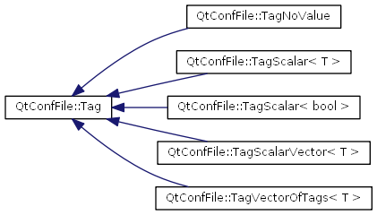

Main Page
Classes
Files
Class List
Class Hierarchy
Class Members
Graphical Class Hierarchy
Go to the textual class hierarchy

Generated on Tue Oct 8 09:18:24 2013 for QtConfFile by
1.5.6
 1.5.6
1.5.6